Apache Flink Studies¶
Why Flink?¶
In classical IT architecture, we can see two types of data processing: transactional and analytics. With 'monolytics' application, the database system serves multiple applications which sometimes access the same database instances and tables. This approach cause problems to support evolution and scaling. Microservice architecture addresses part of those problems by isolating data storage per service.
To get insight from the data, the traditional approach is to develop data warehouse and ETL jobs to copy and transform data from the transactional systems to the warehouse. ETL processes extract data from a transactional database, transform data into a common representation that might include validation, value normalization, encoding, deduplication, and schema transformation, and finally load the new records into the target analytical database. They are batches and run periodically.
From the data warehouse, the analysts build queries, metrics, and dashboards / reports to address a specific business question. Massive storage is needed, which uses different protocol such as: NFS, S3, HDFS...
Today, there is a new way to think about data, by considering them, as continuous streams of events, which can be processed in real time. Those event streams serve as the foundation for stateful stream processing application: the analytics move to the data.
We can define three classes of application implemented with stateful stream processing:
- Event-driven applications: to adopt the reactive manifesto for scaling, resilience, responsive application, leveraging messaging as communication system.
- Data pipeline applications: replace ETL with low latency stream processing.
- Data analytics applications: immediately act on the data and query live updated reports.
For more real industry use cases content see the Flink Forward web site.
The What¶
Apache Flink (2016) is a framework and distributed processing engine for stateful computations over unbounded and bounded data streams. Flink supports batch (data set )and graph (data stream) processing. It is very good at:
- Very low latency processing event time semantics to get consistent and accurate results even in case of out of order events
- Exactly once state consistency
- Millisecond latencies while processing millions of events per second
- Expressive and easy-to-use APIs: map, reduce, join, window, split, and connect...
- Fault tolerance, and high availability: supports worker and master failover, eliminating any single point of failure
- A lot of connectors to integrate with Kafka, Cassandra, Pulsar, Elastic Search, JDBC, S3...
- Support container and deployment on Kubernetes
- Support updating the application code and migrate jobs to different Flink clusters without losing the state of the application
- Also support batch processing
The figure below illustrates those different models combined with Zepellin as a multi purpose notebook to develop data analytic projects on top of Spark, Python or Flink.
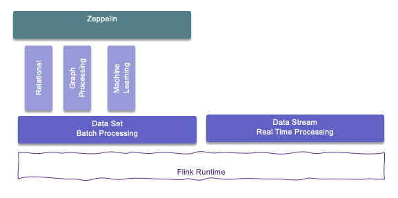
Stream processing concepts¶
In Flink, applications are composed of streaming dataflows that may be transformed by user-defined operators. These dataflows form directed graphs that start with one or more sources, and end in one or more sinks. The data flows between operations. The figure below, from product documentation, summarizes the simple APIs used to develop a data stream processing flow:

src: apache Flink product doc
Stream processing includes a set of functions to transform data, to produce a new output stream. Intermediate steps compute rolling aggregations like min, max, mean, or collect and buffer records in time window to compute metrics on finite set of events. To properly define window operator semantics, we need to determine both how events are assigned to buckets and how often the window produces a result. Flink's streaming model is based on windowing and checkpointing, it uses controlled cyclic dependency graph as its execution engine.
The following figure is showing integration of stream processing runtime with an append log system, like Kafka, with internal local state persistence and continuous checkpointing to remote storage as HA support:
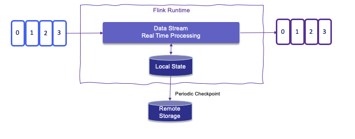
As part of the checkpointing process, Flink saves the 'offset read commit' information of the append log, so in case of a failure, Flink recovers a stateful streaming application by restoring its state from a previous checkpoint and resetting the read position on the append log.
The evolution of microservice is to become more event-driven, which are stateful streaming applications that ingest event streams and process the events with application-specific business logic. This logic can be done in flow defined in Flink and executed in the clustered runtime.
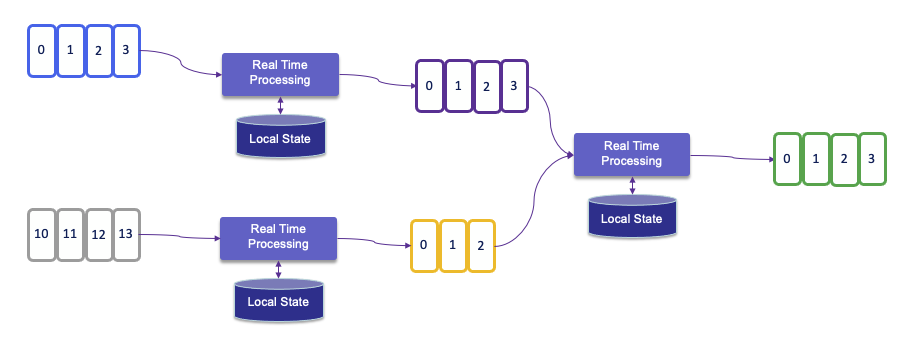
Transform operators can be chained. Dataflow can consume from Kafka, Kinesis, Queue, and any data sources. A typical high level view of Flink app is presented in figure below:

src: apache Flink product doc
Programs in Flink are inherently parallel and distributed. During execution, a stream has one or more stream partitions, and each operator has one or more operator subtasks.

src: apache Flink site
A Flink application, can be stateful, run in parallel on a distributed cluster. The various parallel instances of a given operator will execute independently, in separate threads, and in general will be running on different machines. State is always accessed locally, which helps Flink applications achieve high throughput and low-latency. You can choose to keep state on the JVM heap, or if it is too large, saves it in efficiently organized on-disk data structures.

This is the Job Manager component which parallelizes the job and distributes slices of the Data Stream flow, you defined, to the Task Managers for execution. Each parallel slice of your job will be executed in a task slot.

Parameters
- taskmanager.numberOfTaskSlots: 2
Once Flink is started (for example with the docker image), Flink Dashboard http://localhost:8081/#/overview presents the execution reporting:
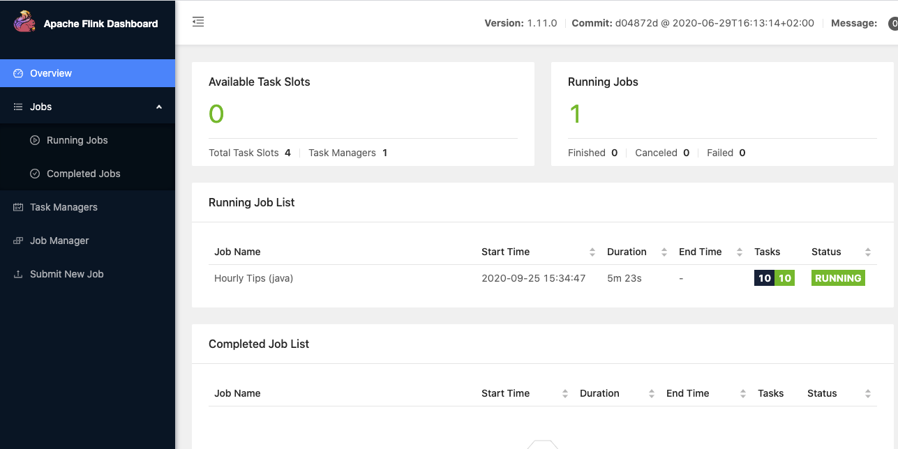
The execution is from one of the training examples, the number of task slot was set to 4, and one job is running.
Spark is not a true real-time processing while Flink is. Both Flink and Spark support batch processing.
Stateless¶
Some applications support data loss and expect fast recovery times in case of failure and are always consuming the latest incoming data: Alerting applications where only low latency alerts are useful, fit into this category. As well as applications where only the last data received is relevant.
When checkpointing is turned off Flink offers no inherent guarantees in case of failures. This means that you can either have data loss or duplicate messages combined always with a loss of application state.
Statefulness¶
When using aggregates or windows operators, states need to be kept. For fault tolerant Flink uses checkpoints and savepoints. Checkpoints represent a snapshot of where the input data stream is with each operator's state. A streaming dataflow can be resumed from a checkpoint while maintaining consistency (exactly-once processing semantics) by restoring the state of the operators and by replaying the records from the point of the checkpoint.
In case of failure of a parallel execution, Flink stops the stream flow, then restarts operators from the last checkpoints. When doing the reallocation of data partition for processing, states are reallocated too. States are saved on distributed file systems. When coupled with Kafka as data source, the committed read offset will be part of the checkpoint data.
Flink uses the concept of Checkpoint Barriers, which represents a separation of records,
so records received since the last snapshot are part of the future snapshot.
Barrier can be seen as a mark, a tag in the data stream that closes a snapshot.
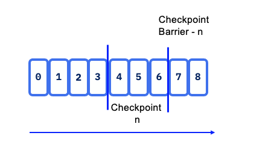
In Kafka, it will be the last committed read offset. The barrier flows with the stream
so it can be distributed. Once a sink operator (the end of a streaming DAG) has received
the barrier n from all of its input streams, it acknowledges that snapshot n to
the checkpoint coordinator.
After all sinks have acknowledged a snapshot, it is considered completed.
Once snapshot n has been completed, the job will never ask the source for records
before such snapshot.
State snapshots are save in a state backend (in memory, HDFS, RockDB).
KeyedStream is a key-value store. Key matches the key in the stream, state update does not need transaction.
For DataSet (Batch processing) there is no checkpoint, so in case of failure the stream is replayed from te beginning.
When addressing exactly once processing it is very important to consider the following:
- the read operation from the source
- apply the processing logic like window aggregation
- generate the results to a sink
1 and 2 can be done exactly once, using Flink source connector and checkpointing but generating one unique result to a sink is more complex and is dependant of the target technology.
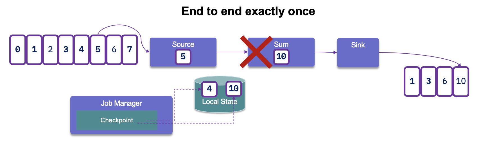
After reading records from Kafka, do the processing and generate results, in case of failure Flink will reload the record from the read offset and may generate duplicates in the Sink.
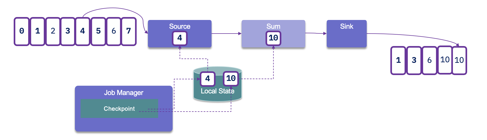
As duplicates will occur, we always need to assess how downstream applications support idempotence. A lot of distributed key-value storages support consistent result event after retries.
To support end-to-end exactly one delivery we need to have a sink that supports transaction and two-phase commit. In case of failure we need to rollback the output generated. It is important to note transactional output impacts latency.
Flink takes checkpoints periodically, like every 10 seconds, which leads to the minimum latency we can expect at the sink level.
For Kafka Sink connector, as kafka producer, we need to set the transactionId, and the delivery type:
new KafkaSinkBuilder<String>()
.setBootstrapServers(bootstrapURL)
.setDeliverGuarantee(DeliveryGuarantee.EXACTLY_ONCE)
.setTransactionalIdPrefix("store-sol")
With transaction ID, a sequence number is sent by the kafka producer API to the broker, and so the partition leader will be able to remove duplicate retries.
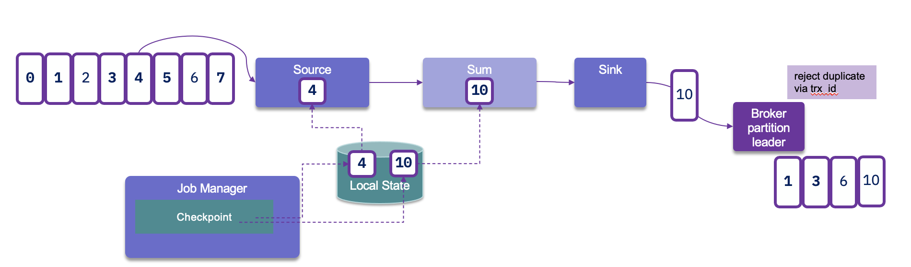
When the checkpointing period is set, we need to also configure transaction.max.timeout.ms
of the Kafka broker and transaction.timeout.ms for the producer (sink connector) to a higher
timeout than the checkpointing interval plus the max expected Flink downtime. If not the Kafka broker
will consider the connection has fail and will remove its state management.
Windowing¶
Windows are buckets within a Stream and can be defined with times, or count of elements.
- Tumbling window assign events into nonoverlapping buckets of fixed size. When the window border is passed, all the events are sent to an evaluation function for processing. Count-based tumbling windows define how many events are collected before triggering evaluation. Time based timbling window define time interval of n seconds. Amount of the data vary in a window.
.keyBy(...).window(TumblingProcessingTimeWindows.of(Time.seconds(2)))
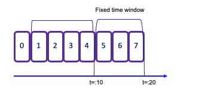
- Sliding window: same but windows can overlap. An event might belong to multiple buckets. So there is a
window sliding timeparameter:.keyBy(...).window(SlidingProcessingTimeWindows.of(Time.seconds(2), Time.seconds(1)))
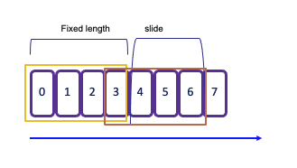
- Session window: Starts when the data stream processes records and stop when there is inactivity, so the timer set this threshold:
.keyBy(...).window(ProcessingTimeSessionWindows.withGap(Time.seconds(5))). The operator creates one window for each data element received.
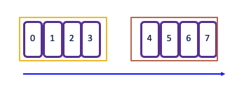
-
Global window: one window per key and never close. The processing is done with Trigger:
.keyBy(0) .window(GlobalWindows.create()) .trigger(CountTrigger.of(5))
KeyStream can help to run in parallel, each window will have the same key.
Time is central to the stream processing, and the time is a parameter of the flow / environment and can take different meanings:
ProcessingTime= system time of the machine executing the task: best performance and low latencyEventTime= the time at the source level, embedded in the record. Deliver consistent and deterministic results regardless of orderIngestionTime= time when getting into Flink.
See example TumblingWindowOnSale.java in my-fink folder and to test it, do the following:
# Start the SaleDataServer that starts a server on socket 9181 and will read the avg.txt file and send each line to the socket
java -cp target/my-flink-1.0.0-SNAPSHOT.jar jbcodeforce.sale.SaleDataServer
# inside the job manager container start with
`flink run -d -c jbcodeforce.windows.TumblingWindowOnSale /home/my-flink/target/my-flink-1.0.0-SNAPSHOT.jar`.
# The job creates the data/profitPerMonthWindowed.txt file with accumulated sale and number of record in a 2 seconds tumbling time window
(June,Bat,Category5,154,6)
(August,PC,Category5,74,2)
(July,Television,Category1,50,1)
(June,Tablet,Category2,142,5)
(July,Steamer,Category5,123,6)
...
Trigger¶
Trigger determines when a window is ready to be processed. All windows have default trigger. For example tumbling window has a 2s trigger. Global window has explicit trigger. We can implement our own triggers by implementing the Trigger interface with different methods to implement: onElement(..), onEventTime(...), onProcessingTime(...)
Default triggers:
- EventTimeTrigger: fires based upon progress of event time
- ProcessingTimeTrigger: fires based upon progress of processing time
- CountTrigger: fires when # of element in a window > parameter
- PurgingTrigger
Eviction¶
Evictor is used to remove elements from a window after the trigger fires and before or after the window function is applied. The logic to remove is app specific.
The predefined evictors: CountEvictor, DeltaEvictor and TimeEvictor.
Watermark¶
Watermark is the mechanism to keep how the event time has progressed: with windowing operator, event time stamp is used, but windows are defined on elapse time, for example, 10 minutes, so watermark helps to track te point of time where no more delayed events will arrive. The Flink API expects a WatermarkStrategy that contains both a TimestampAssigner and WatermarkGenerator. A TimestampAssigner is a simple function that extracts a field from an event. A number of common strategies are available out of the box as static methods on WatermarkStrategy, so reference to the documentation and examples.
Watermark is crucial for out of order events, and when dealing with multi sources. Kafka topic partitions can be a challenge without watermark. With IoT device and network latency, it is possible to get an event with an earlier timestamp, while the operator has already processed such event timestamp from other sources.
It is possible to configure to accept late events, with the allowed lateness time by which element can be late before being dropped. Flink keeps a state of Window until the allowed lateness time expires.
Resources¶
- Product documentation.
- Official training
- Base docker image is: https://hub.docker.com/_/flink
- Flink docker setup and the docker-compose files in this repo.
- FAQ
- Cloudera flink stateful tutorial: very good example for inventory transaction and queries on item considered as stream
- Building real-time dashboard applications with Apache Flink, Elasticsearch, and Kibana